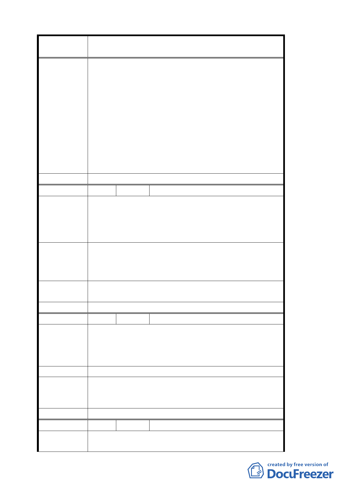

案 名 變更臺北市文山區指南里、老泉里部分保護區為休閒
產業特定專用區都市計畫案
查 結 論 築物不符前款規定時，仍得繼續為原有合法之使
用，但不得申請變更為營業使用」，倘經營農業使用
之農民，未來並無計畫申請經營相關餐飲營業使用
時，可依目前使用情形繼續合法使用。
2. 有關稅率適用問題，移請建設局及稅務機關參考辦
理。
3. 有關原有不符本計畫土地使用分區管制之建築，修
正為三年內完成申請建築核准，核准二年內建築完
成。
4. 市府目前業已籌組跨局處之「貓空地區產業發展及
環境改善推動小組」推動相關工作。
委 員會決 議 同專案小組審查結論。
編 號 ２ 陳情人 梁化武
一、變更老泉里部份保護區為休閒產業特定專用區，
陳情理由
對老泉里整體有保護區土地之公民而言不公道。
二、市政府未能整體考量人民權益，顯然係頭痛醫頭
腳痛醫腳之嫌。
一、將老泉里整體保護區考量變更為休閒產業特定專
建議辦法
用區。
二、據說明老泉里部份將在七月另案辦理，希望儘快。
專案小組審 有關老泉里其他地區之規劃另案進行「變更臺北市文
查 結 論 山區景美溪左岸老泉里附近地區主要計畫案」辦理。
委 員會決 議 同專案小組審查結論。
編 號 ３ 陳情人 張榮光
土地標示：文山區草湳段三小段 459 地號
陳情理由
文山區指南段二小段 19、27 地號
本土地地勢平緩，目前為種植茶樹使用，建議應予納
入計畫範圍內，以利整體規劃使用。
建 議 辦 法 以上土地並未納入本計畫範圍內，建議應予納入。
專案小組審
查結論
本計畫範圍之劃定依整體發展構想參考鄰接產業道
路、現況開發、自然地形及地籍完整等因素辦理，本
建議歉難採納。
委 員會決 議 同專案小組審查結論。
編 號 ４ 陳情人 張慶喜
陳情理由
土地標示：文山區指南段三小段 366 地號
此處為日據時期所蓋的土造房屋，未辦保存登記，請
五